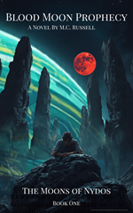

About Me
Welcome! I'm Myles Russell—a software developer, author, and lifelong problem solver with more than 25 years of experience spanning customer service, technical support, operations management, education, and software development. Whether I'm building software, writing novels, or exploring new technologies, I'm driven by a simple goal: create things that solve problems and make people's lives a little easier.
Throughout my career, I've worked as an instructor, office manager, customer support representative, sales professional, and operations leader. Those experiences taught me how to communicate complex ideas clearly, understand the needs of both customers and businesses, manage projects, and continually improve the way work gets done.
In recent years, I've focused on software development, earning the Google Data Analytics Professional Certificate while building applications in Python. My current flagship project, WordVault, is a productivity application designed to help users save time by instantly inserting frequently used text into any application. Developing it has given me valuable experience in software architecture, user experience, data management, and product development.
Outside of software, I'm also the author of multiple novels spanning epic fantasy, suspense, psychological thrillers, and speculative fiction. Writing allows me to combine creativity with the same problem-solving mindset that drives my software projects, creating immersive worlds, memorable characters, and stories that ask big questions.
This website serves as a home for everything I create—from software applications and development projects to novels, research ideas, and future ventures. Thanks for stopping by, and I hope you enjoy exploring my work.
WordVault Beta Version 1.0
WordVault is a lightweight desktop assistant that securely encrypts and stores your frequently used text snippets and code blocks completely offline. Paste your saved pre-written text directly into any active application with a single click. A must have application for anyone who types the same things over and over again every day. WordVault software: Type it once. Never type it again.
The Moons of Nydos

Walter and the Witch
The Black Water
The gig economy isn't just a job. It's a killing field. Follow Arthur's calculating plunge from corporate manager to invisible surveillance asset.
Good Food for the Worms
A data-driven corporate analyst discovers the physical architecture of decomposition and metal fabrication inside a hidden salvage yard.
Out of Eden
A standalone suspense novel investigating the raw, unedited boundaries of survival, isolation, and psychological limits.
Void Theory
A theoretical exploration of the structure and nature of the universe. Additional research notes, abstracts, and manuscript details will be added here.